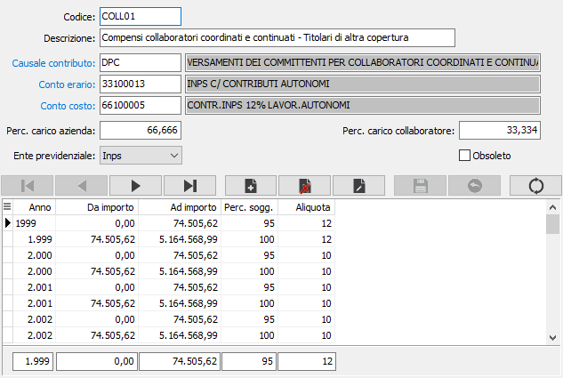

Codici Inps
La tabella consente di manutenere le aliquote contributive stabilite dall’Inps per le varie tipologie di lavoratori autonomi nei vari anni.

CODICE: campo alfanumerico di 8 caratteri per definire il codice della aliquota contributiva in esame. Sul campo sono attive le funzioni di vista sulla tabella stessa.
DESCRIZIONE: campo alfanumerico di 50 caratteri per inserire la descrizione dell’aliquota contributiva.
CAUSALE CONTRIBUTO: codice alfanumerico di 4 caratteri, presente nella tabella Causali contributo, cui è soggetta la prestazione in esame. Sul campo sono attive le funzioni di ricerca (F9) e manutenzione (CTRL+W) sulla tabella stessa.
CONTO ERARIO: codice alfanumerico di 8 caratteri presente nel piano dei conti per inserire il codice del sottoconto patrimoniale di contabilità a cui devono essere imputati gli importi di ritenuta da versare all’INPS. Sul campo sono attive le funzioni di ricerca (F9) e manutenzione (CTRL+W) sulla tabella stessa.
CONTO DI COSTO: codice alfanumerico di 8 caratteri presente nel piano dei conti per inserire il codice del sottoconto economico di contabilità a cui devono essere imputati come costo aziendale gli importi di ritenuta a carico dell’azienda. Sul campo sono attive le funzioni di ricerca (F9) e manutenzione (CTRL+W) sulla tabella stessa.
%CARICO AZIENDA: campo numerico in cui deve essere inserita la percentuale di contributo a carico dell’ azienda.
%CARICO COLLABORATORE: campo numerico in cui deve essere inserita la percentuale di contributo a carico del collaboratore.
ENTE PREVIDENZIALE: definisce l'ente a cui versare il tributo. Valori possibili INPS (valore di default), Enasarco.
ANNO FISCALE: campo numerico per indicare l’anno per cui sono validi i valori dei campi successivi.
DA IMPORTO, A IMPORTO: consente di inserire la fascia di importo per cui si devono utilizzare le percentuali successive.
% ASSOGGETTAMENTO: campo numerico per definire la percentuale di assoggettamento ad INPS della prestazione in esame.
ALIQUOTA: campo numerico di per definire l’aliquota INPS della prestazione in esame.
Se l'ente previdenziale è Enasarco sono presenti i seguenti campi:
MINIMALE ANNUO: Indicare l'importo annuo del minimale.
Periodicità: Indica se il minimale deve essere considerato su basa annua oppure rapportato a sottoperiodi mensili o trimestrali.